Candidate List 20260705Last night — ZTF: 1,977 passed basic cuts (69 young) · LSST: 0 passed basic cuts (0 young)Previous Day Next Day
Section 1: New Sources (age<1d) Section 2: Old (1-5d) sources observed last nightplaceholder
Section 1: New Afterglow/FBOT Cands Last Night (1)
1. [ZTF] ZTF26abezksy (Afterglow?) [Back to Top] [Share] [Trigger Swift] [Fritz Alert] [Fritz Source] [Lasair]RA, Dec: 279.26495, 10.97334 18h37m3.59s, 10d58m24.01sGalactic (l, b): 41.14091, 8.13901 ext(g-r) = 0.329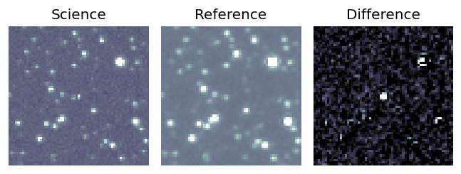
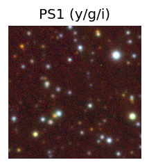
TESS: Sectors [ 80 118]
PS1: 0 sources in 3 arcsec
LegacySurvey: 0 sources in 3 arcsec
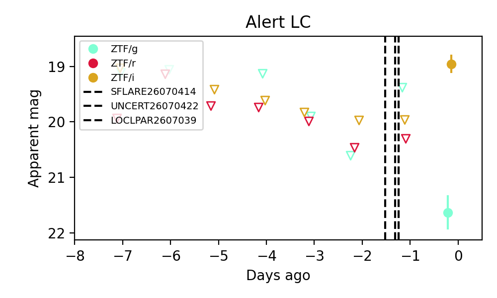
Extinction-corrected gi color:
From alerts: 2.17 +/- 0.35 mag
Consistent with synchrotron, g-r>0!
Rise Rate:
i: 1.03 mag/day
Fade Rate:
Section 2: Older Sources Observed Last Night (12)
0. [ZTF] ZTF26abekjzj (FBOT?) [Back to Top] [Share] [Trigger Swift] [Fritz Alert] [Fritz Source] [Lasair]RA, Dec: 239.90437, 7.85036 15h59m37.05s, 7d51m1.30sGalactic (l, b): 18.52519, 41.5335 ext(g-r) = 0.044


TESS: Sectors [ 51 117]
PS1: 0 sources in 3 arcsec
LegacySurvey: 1 sources in 3 arcsec Closest: d = 3.34 arcsec, 220.4 deg (east of north) photoz=0.12 (68% bounds 0.01, 0.68), type=PSF peak abs mag = -20.32 (68% bounds -15.56, -24.66)

Extinction-corrected gr color:
From alerts: -0.35 +/- 0.28 mag
Extinction-corrected gi color:
From alerts: -0.53 +/- 99 mag
Extinction-corrected ri color:
From alerts: -0.17 +/- 99 mag
Rise Rate:
g: 0.44 mag/day
r: 0.32 mag/day
i: 0.06 mag/day
Fade Rate:
g: 0.19 mag/day
r: 0.16 mag/day
i: 0.14 mag/day
1. [ZTF] ZTF26abekuqw (Afterglow?) [Back to Top] [Share] [Trigger Swift] [Fritz Alert] [Fritz Source] [Lasair]RA, Dec: 232.54213, -27.84644 15h30m10.11s, -27d-50m-47.18sGalactic (l, b): 340.80324, 23.11787 ext(g-r) = 0.171

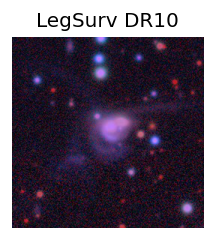
TESS: Sectors [ 11 38 65 91 115]
NED (10 arcsec):Found NED spec-z: z=0.07; peak abs mag = -19.04
PS1: 0 sources in 3 arcsec
LegacySurvey: 1 sources in 3 arcsec Closest: d = 1.84 arcsec, 342.8 deg (east of north) photoz=0.08 (68% bounds 0.06, 0.1), type=SER peak abs mag = -18.82 (68% bounds -18.12, -19.39)

Extinction-corrected gr color:
From alerts: 0.57 +/- 0.3 mag
Consistent with synchrotron, g-r>0!
Rise Rate:
g: 0.09 mag/day
r: 0.06 mag/day
Fade Rate:
g: 0.15 mag/day
r: 0.54 mag/day
2. [ZTF] ZTF26abemkvx (Afterglow?) (TNS: 2) [Back to Top] [Share] [Trigger Swift] [Fritz Alert] [Fritz Source] [Lasair]RA, Dec: 289.2679, 46.38841 19h17m4.30s, 46d23m18.26sGalactic (l, b): 77.6813, 15.16671 ext(g-r) = 0.098


TESS: Sectors [ 14 15 40 41 53 54 55 74 75 80 82 119 120]
PS1: 0 sources in 3 arcsec
LegacySurvey: 0 sources in 3 arcsec

Extinction-corrected gr color:
From alerts: -3.16 +/- 99 mag
Rise Rate:
r: 2.53 mag/day
Fade Rate:
g: 0.16 mag/day
r: 2.89 mag/day
3. [ZTF] ZTF26abetmxa (Afterglow?) [Back to Top] [Share] [Trigger Swift] [Fritz Alert] [Fritz Source] [Lasair]RA, Dec: 350.97646, 51.43138 23h23m54.35s, 51d25m52.95sGalactic (l, b): 109.32036, -9.1122 ext(g-r) = 0.284


TESS: Sectors 17
PS1: 0 sources in 3 arcsec
LegacySurvey: 0 sources in 3 arcsec

Extinction-corrected gr color:
From alerts: -0.08 +/- 0.16 mag
Consistent with synchrotron, g-r>0!
Rise Rate:
g: 0.17 mag/day
r: 0.52 mag/day
Fade Rate:
4. [ZTF] ZTF26abeqtrl (FBOT?) [Back to Top] [Share] [Trigger Swift] [Fritz Alert] [Fritz Source] [Lasair]RA, Dec: 249.82341, 34.02119 16h39m17.62s, 34d 1m16.28sGalactic (l, b): 55.72006, 41.0916 ext(g-r) = 0.023


TESS: Sectors [ 24 25 51 52 78 79 117]
SDSS (<15 kpc):Found SDSS phot-z: z=0.25; peak abs mag = -21.48
PS1: 0 sources in 3 arcsec
LegacySurvey: 1 sources in 3 arcsec Closest: d = 1.40 arcsec, 174.4 deg (east of north) photoz=0.05 (68% bounds 0.02, 0.09), type=SER peak abs mag = -17.49 (68% bounds -15.44, -18.97)

Extinction-corrected gr color:
From alerts: -0.16 +/- 0.19 mag
Consistent with synchrotron, g-r>0!
Rise Rate:
g: 0.3 mag/day
r: 0.33 mag/day
Fade Rate:
5. [ZTF] ZTF26abeupwu (Afterglow?FBOT?) [Back to Top] [Share] [Trigger Swift] [Fritz Alert] [Fritz Source] [Lasair]RA, Dec: 266.47039, -18.48889 17h45m52.89s, -18d-29m-20.01sGalactic (l, b): 8.97601, 5.36813 WARNING: 4.91 deg from ecliptic plane ext(g-r) = 0.852


TESS: Sectors [ 91 92 115 116]
PS1: 1 source in 3 arcsec Closest: d = 0.29 arcsec photoz=1.20+/-0.02 peak abs mag = -28.26
LegacySurvey: 0 sources in 3 arcsec

Extinction-corrected gr color:
From alerts: -1.38 +/- 99 mag
Extinction-corrected gi color:
From alerts: -1.59 +/- 99 mag
Rise Rate:
g: 0.18 mag/day
r: 0.35 mag/day
Fade Rate:
r: 1.37 mag/day
6. [ZTF] ZTF26abeyfwd (FBOT?) [Back to Top] [Share] [Trigger Swift] [Fritz Alert] [Fritz Source] [Lasair]RA, Dec: 249.11561, 15.11248 16h36m27.75s, 15d 6m44.94sGalactic (l, b): 32.04002, 36.59509 ext(g-r) = 0.065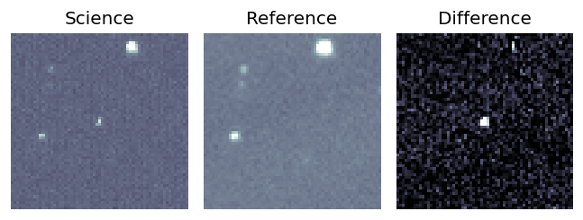
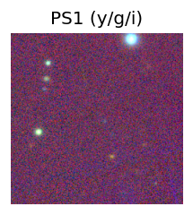
TESS: Sectors [ 79 117]
PS1: 0 sources in 3 arcsec
LegacySurvey: 1 sources in 3 arcsec Closest: d = 0.81 arcsec, 335.7 deg (east of north) photoz=0.56 (68% bounds 0.41, 0.98), type=REX peak abs mag = -23.88 (68% bounds -23.08, -25.35)
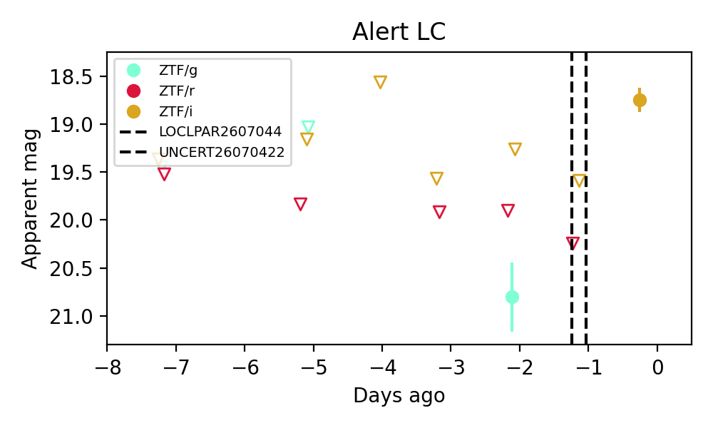
Extinction-corrected gr color:
From alerts: 0.84 +/- 99 mag
Extinction-corrected gi color:
From alerts: 1.44 +/- 99 mag
Rise Rate:
i: 0.95 mag/day
Fade Rate:
7. [ZTF] ZTF26abezkwg (FBOT?) [Back to Top] [Share] [Trigger Swift] [Fritz Alert] [Fritz Source] [Lasair]RA, Dec: 276.53722, 8.16176 18h26m8.93s, 8d 9m42.35sGalactic (l, b): 37.38648, 9.3084 ext(g-r) = 0.231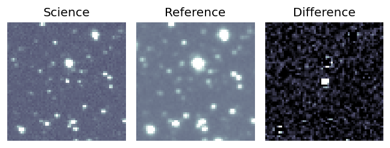
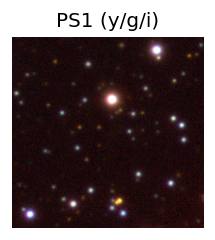
TESS: Sectors [ 80 80 118]
PS1: 1 source in 3 arcsec Closest: d = 3.18 arcsec photoz=0.67+/-0.12 peak abs mag = -26.17
LegacySurvey: 0 sources in 3 arcsec
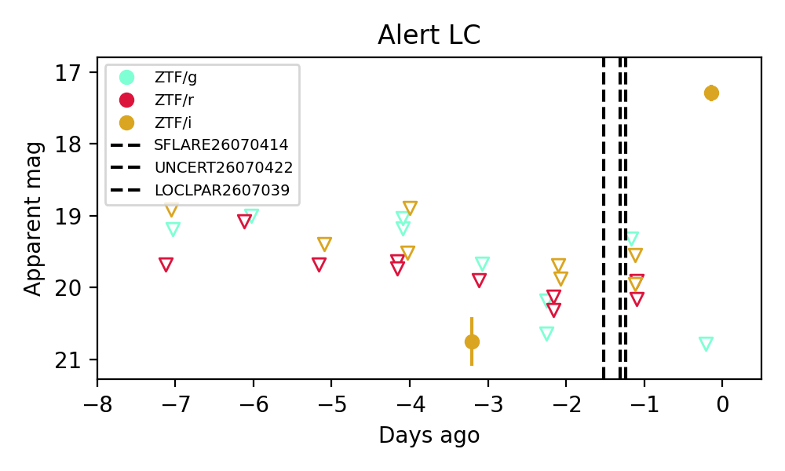
Extinction-corrected gi color:
From alerts: 3.13 +/- 99 mag
Extinction-corrected ri color:
From alerts: -0.97 +/- 99 mag
Rise Rate:
i: 2.71 mag/day
Fade Rate:
8. [ZTF] ZTF26abezlwy (Afterglow?) [Back to Top] [Share] [Trigger Swift] [Fritz Alert] [Fritz Source] [Lasair]RA, Dec: 274.66132, 3.2402 18h18m38.72s, 3d14m24.74sGalactic (l, b): 32.08467, 8.77067 ext(g-r) = 0.414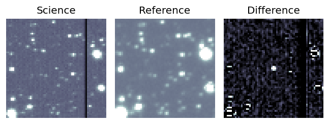
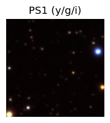
TESS: Sectors [ 80 118]
PS1: 1 source in 3 arcsec Closest: d = 3.94 arcsec photoz=0.29+/-0.80 peak abs mag = -22.88
LegacySurvey: 0 sources in 3 arcsec
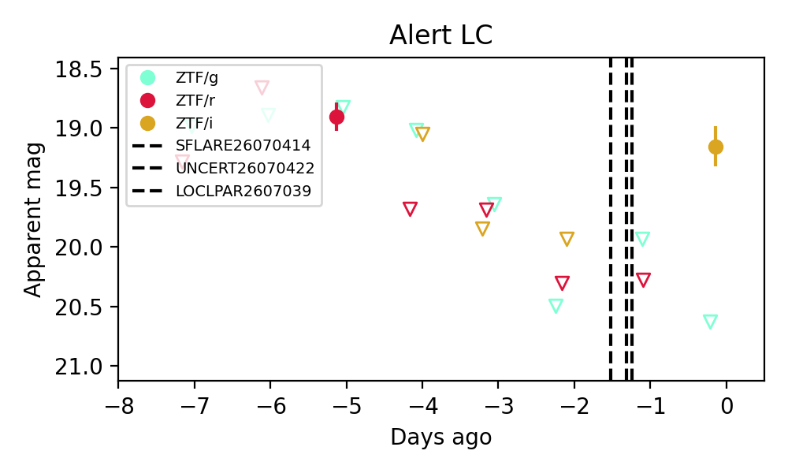
Extinction-corrected gr color:
From alerts: -0.5 +/- 99 mag
Extinction-corrected gi color:
From alerts: 0.84 +/- 99 mag
Rise Rate:
r: 0.33 mag/day
i: 0.4 mag/day
Fade Rate:
r: 0.81 mag/day
9. [ZTF] ZTF26abezocd (FBOT?) [Back to Top] [Share] [Trigger Swift] [Fritz Alert] [Fritz Source] [Lasair]RA, Dec: 278.10614, 2.82453 18h32m25.47s, 2d49m28.31sGalactic (l, b): 33.28401, 5.51637 ext(g-r) = 1.141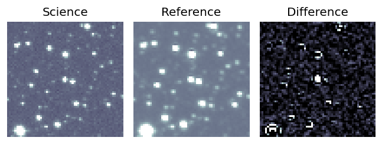
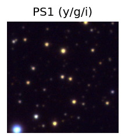
TESS: Sectors 118
PS1: 1 source in 3 arcsec Closest: d = 0.59 arcsec photoz=0.45+/-0.03 peak abs mag = -26.84
LegacySurvey: 0 sources in 3 arcsec
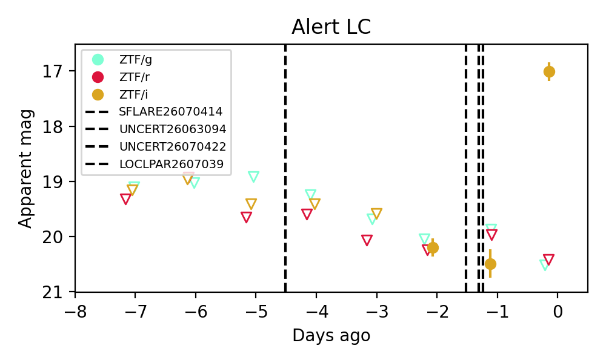
Extinction-corrected gi color:
From alerts: 1.74 +/- 99 mag
Extinction-corrected ri color:
From alerts: 2.79 +/- 99 mag
Rise Rate:
i: 1.63 mag/day
Fade Rate:
10. [ZTF] ZTF26abezyud (FBOT?) [Back to Top] [Share] [Trigger Swift] [Fritz Alert] [Fritz Source] [Lasair]RA, Dec: 266.92606, 26.99452 17h47m42.25s, 26d59m40.26sGalactic (l, b): 51.77669, 25.13006 ext(g-r) = 0.073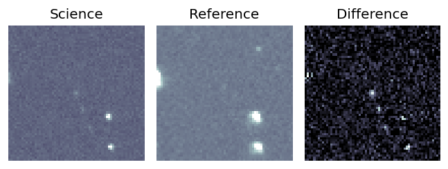
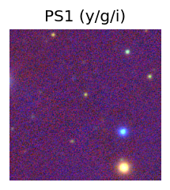
TESS: Sectors [ 26 52 53 79 80 118]
PS1: 0 sources in 3 arcsec
LegacySurvey: 1 sources in 3 arcsec Closest: d = 1.44 arcsec, 169.4 deg (east of north) photoz=1.07 (68% bounds 0.69, 1.38), type=PSF peak abs mag = -24.01 (68% bounds -22.81, -24.68)
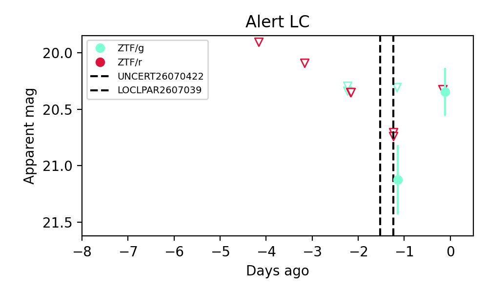
Extinction-corrected gr color:
From alerts: -0.05 +/- 99 mag
Rise Rate:
g: 0.75 mag/day
Fade Rate:
11. [ZTF] ZTF26abfaesc (Afterglow?) [Back to Top] [Share] [Trigger Swift] [Fritz Alert] [Fritz Source] [Lasair]RA, Dec: 281.53014, -3.27383 18h46m7.23s, -3d-16m-25.80sGalactic (l, b): 29.41246, -0.31095 ext(g-r) = 19.618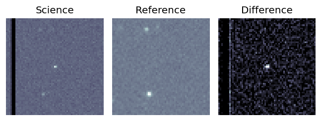
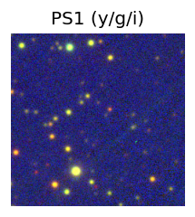
TESS: Sectors -1
PS1: 0 sources in 3 arcsec
LegacySurvey: 0 sources in 3 arcsec
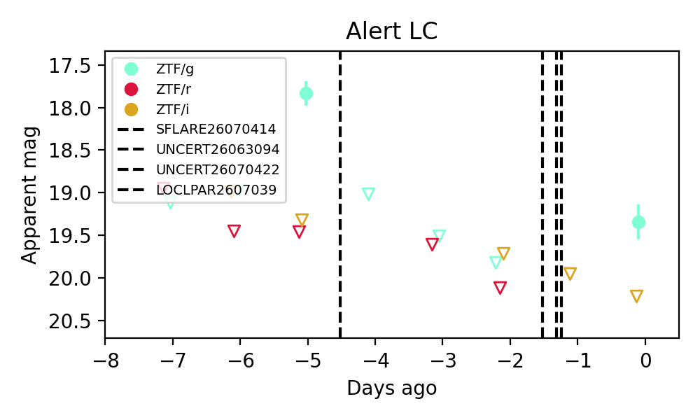
Extinction-corrected gr color:
From alerts: -21.24 +/- 99 mag
Extinction-corrected gi color:
From alerts: -31.11 +/- 99 mag
Rise Rate:
g: 1.13 mag/day
Fade Rate:
g: 1.29 mag/day